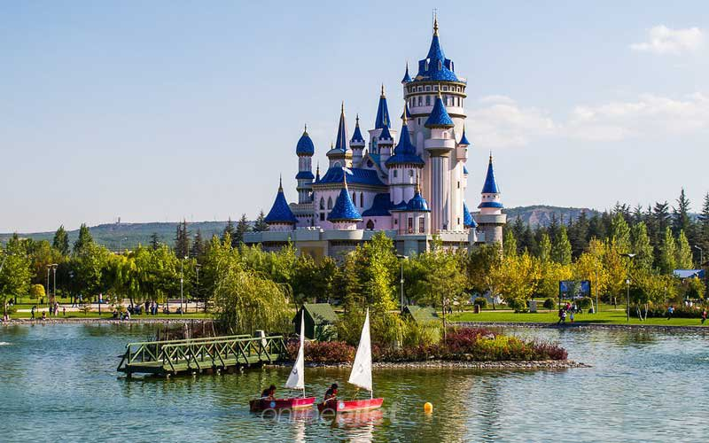

Eskişehir bir öğrenci için Türkiye'nin en güzel şehirlerinden biridir. Üniversiteyi Eskişehir Osmangazi Üniversitesi'nde okuduğumdan 7 yıl Eskişehirde yaşadım.
O kadar benimsedim ki nerelisin dediklerinde Eskişehirliyim diyorum. Şu an doğup büyüdüğüm Kocaelide yaşamama rağmen benim evim hala Eskişehir.
İnsan hayatı boyunca denizi olan bir şehirde yaşadıktan sonra denizsiz bir şehre giderken tereddüt yaşayabiliyor. Ama Eskişehir öyle sıcak bir şehirdir ki (-10 derecelere rağmen) gözünüz huzur bulmak ya da hüzünlenmek için o denizi aramaz.
Osmangazi Üniversitesi ve Anadolu Üniversitesinin yanı sıra açık öğretim fakültesi de olduğundan Türkiye'deki en yüksek öğrenci nüfusu Eskişehirdedir. (2021-2022 yılı kayıtlarına göre 3.5 milyonun üzerinde.)
Size Eskişehirdeyken çektiğim analog fotoğraflarımla bir kaç yeri göstermek isterim.
Eskişehire Gittiğinizde Görmeniz Gereken Yerler
- Porsuk Çayı ve Adalar
- Sazova Park
- Odunpazarı Evleri
- Kanlıkavak Parkı
- Atlıhan El Sanatları Çarşısı
- Haller Gençlik Merkezi
- Kent Park
- Yılmaz Büyükerşen Balmumu Heykelleri Müzesi
Adalar/Porsuk Çayı
Sazova Park
Odunpazarı Evleri

Kanlıkavak Parkı
Atlıhan El Sanatları Çarşısı
Haller Gençlik Merkezi

Kent Park